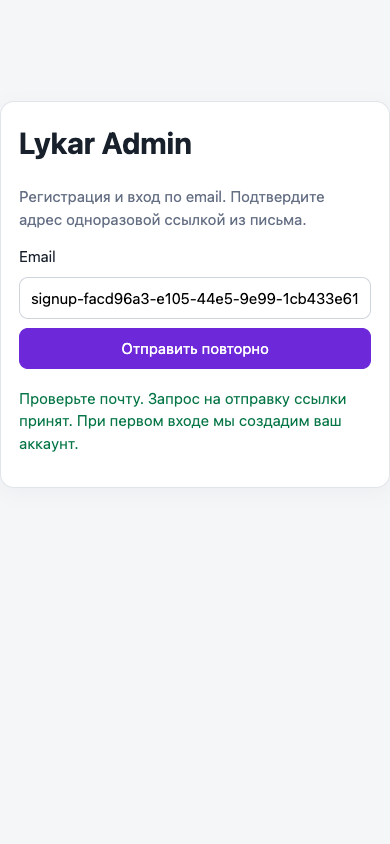
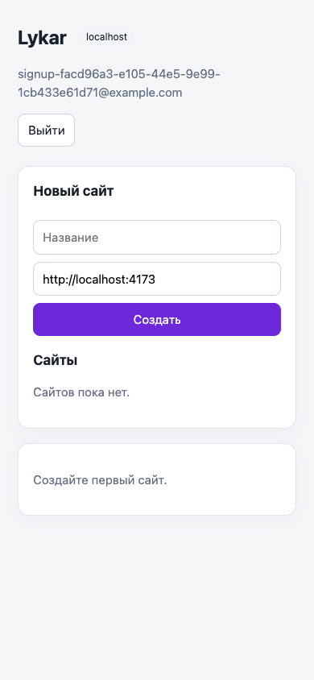
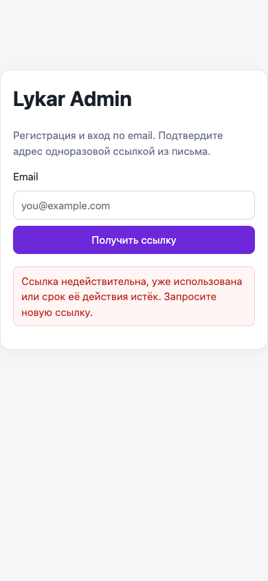
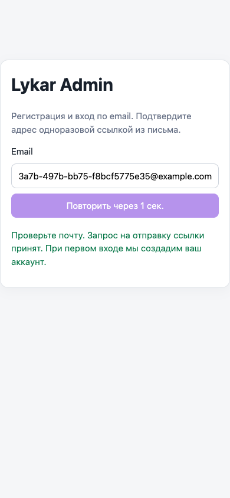
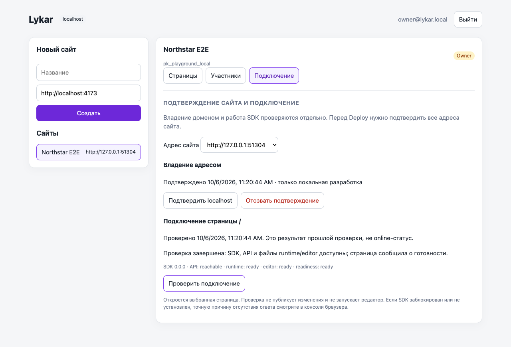
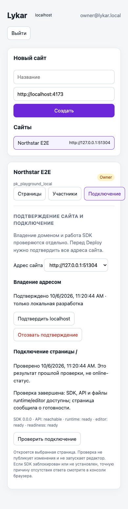
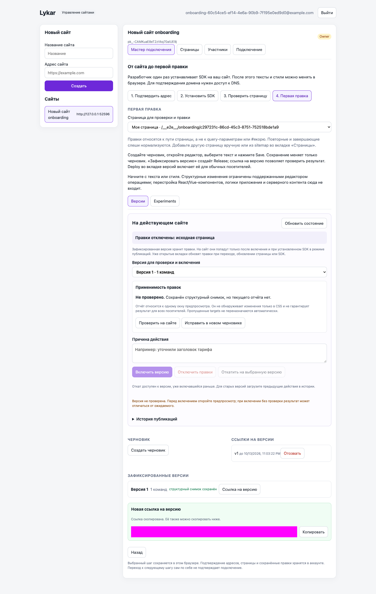
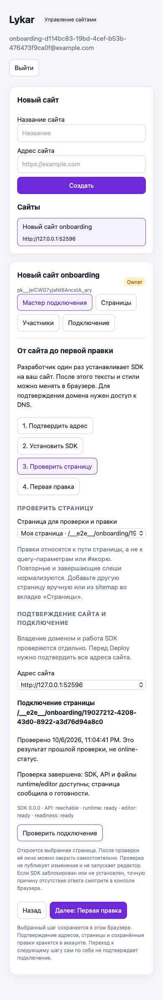

Новый клиент создаёт свой аккаунт и сайт
Регистрация, повторный вход, одноразовые ссылки и независимые права подтверждены на локальном стенде. Реальная доставка писем — следующий этап.
Что работает
- Любой корректный email получает одинаковый ответ 202. Запрос создаёт challenge; аккаунт появляется только после подтверждения ссылки.
- Подтверждённый клиент видит пустой список сайтов и создаёт свой Project с ролью owner. Глобальный owner email используется только для локального dev-login.
- Одновременные signup и invitation acceptance одного email сходятся к одному аккаунту; права остаются привязаны к Project и роли. Приглашение подтверждает адрес получателя независимо от ранее открытого аккаунта.
- Одноразовость, expiry и hash сохранены. Миграция 011 оставляет работоспособными прежние user-bound ссылки и сессии; rollback миграции проверен.
- В интерфейсе есть регистрация/вход, повторная отправка, ошибка использованной/истёкшей ссылки, выход и ошибка выхода. Email сохраняется после неудачной отправки.
- Production отказывает при dev-login, file sender или console senders. HTTP request logs удаляют query strings и скрывают share credentials.
Проверки
| Проверка | Результат | Evidence |
|---|---|---|
| 36 API/PostgreSQL + HTTP smoke, сборки и миграции | PASS | лог · команда и время |
| 18 browser: Chromium 6 · Firefox 6 · WebKit 6 | PASS | лог · команда и время |
| Общий typecheck, включая E2E | PASS | лог · команда и время |
Сценарии и результаты · Playwright JSON · Метод и история попыток
Новые PostgreSQL cases проверяют два независимых аккаунта, чтение/запись чужих Project/Page ID, сохранение роли viewer, гонки одного токена, двух регистраций, регистрации с приглашением, expiry/resend и отзыв сессии. Общий API suite также повторяет существующие membership, deployment и versioning cases.
Browser: реальный вход нового пользователя, resend, пустой список, создание сайта, reload, второй независимый клиент, logout/reuse, keyboard submit, desktop/mobile, потеря отправки и успешный повтор; старый owner/editor путь сохранён. Все финальные cases прошли без skipped, retries и flaky.
Интерфейс · 390 px




Границы на момент завершения 06
Этап 06 проверен с capture/file sender. Внешние письма и HTTPS staging не подключены. Production startup намеренно требует оба настроенных sender adapter; подключение provider относится к 07, инфраструктура — к 12. Полный E3 (07–09) ещё открыт.
По поручению владельца лимит 3 запроса на email и переключение бесплатных провайдеров записаны в план 07. Окно, пауза, провайдеры, квоты и даты сброса ещё уточняются. Эта реализация не включает limiter/router. Полный мастер подключения, подтверждение домена и устранение localhost defaults относятся к 08–09.
Новая ссылка не отзывает другие ранее выданные ссылки: каждая независимо одноразовая и ограничена сроком действия. Logout отзывает текущую сессию.
Срез исходников
Независимый review sol 6.1 high: существенных замечаний нет; тесты просмотрены, без повторного запуска.
HEAD e565328c339af5f12e488c37e0c972ae181d3dc9 + рабочие изменения. 301 source/config файлов; SHA-256 87dca375e9e1795a4b53d6fce76bf9e090f14083aeebf1fefbf18829d3c027c2. Манифест.
Письма, лимиты и квоты
По поручению владельца реализована часть этапа, не требующая реального API-ключа. Полный этап остаётся IN_PROGRESS: доставка на контролируемый ящик и HTTPS staging ещё не проверены.
- Resend и MailerSend: HTML/text письма входа и приглашений, timeout, безопасная обработка ошибок. Disabled режим возвращает 503, file capture доступен только локально.
- По умолчанию 3 запроса/email за час, пауза 60 секунд, 30/IP или actor за час. Значения настраиваются. Login и invitation budgets разделены; адрес нормализуется, в счётчиках хранятся HMAC, а не email/IP.
- Атомарные PostgreSQL reservations и ledger переживают restart. Все типы писем совместно расходуют квоты провайдера: rolling 24h, фактический billing period и резерв.
- Переход к следующему провайдеру происходит только до отправки при исчерпании локальной квоты. Pending/unknown не переотправляется автоматически; принятый delivery ID не отправляется второй раз.
- 429 + Retry-After, countdown в форме входа, безопасные сообщения об ошибке. «Принят» означает принятие API провайдера, не доставку в ящик. При ошибке приглашения Admin обновляет список, поскольку запись могла сохраниться до отказа отправки.
Серверная квота действует и после перезагрузки страницы. Заблокированный resend не меняет токен приглашения. Внешний provider usage не синхронизируется: при подключении нужны проверенные квоты, billing anchor, запас и настройки аккаунта без платных превышений.
Конфигурация и retry contract · Статус задачи · Метод и история проверок
| Проверка 07 | Evidence |
|---|---|
| 63/63 API/PostgreSQL + HTTP smoke · PASS | лог · команда |
| 21/21 browser · 7 Chromium + 7 Firefox + 7 WebKit · PASS | лог · JSON |
| Workspace typecheck · PASS | лог · команда |

Манифест исходников. Существующие изменения прошлых этапов сохранены. Автоматическая очередь, reconciliation и очистка старых записей относятся к этапам 14–15. Реальные ключи не использовались, внешние письма не отправлялись.
Владение сайтом и подключение SDK
DNS TXT подтверждает конкретный origin в конкретном Project. Диагностика страницы не заменяет доказательство владения.
- Одноразовый DNS challenge: hash, expiry, rotation, revoke, проверка прав и актуальности после lookup. Подмена Project/origin/nonce отклоняется.
- Deploy/Rollback требует подтверждения всех origins. Отзыв прекращает последующую выдачу deployment для адреса. Release/history сохранены; повторное подтверждение возвращает eligibility активного deployment.
- Только HTTPS public DNS hostname. Verifier выполняет ограниченный TXT lookup без HTTP fetch, redirects и A/AAAA соединений. Private/IP/wildcard inputs отклоняются. Loopback proof действует только на явно разрешённом dev/test API.
- Page-bound probe связан с user, origin и nonce. Новый запуск заменяет старый; replay/expiry/revoke отклоняются. Admin проверяет popup source/origin/page; SDK отвечает только настроенному API origin и текущему поколению страницы.
- Проверяются API без cookies, runtime/editor assets, static и instrumented React/Vue CSR/hydration, enforcing CSP connect/script/style. Редактор не запускается, правки не применяются.
- Отдельные коды wrong key, unavailable API/assets, CSP, unsupported/pending readiness. NO_SIGNAL означает неопределённый результат, а не offline: отсутствие SDK, блокировка, старая версия или неверный API origin неразличимы без ответа.
- UI показывает дату и устаревание через 15 минут. В отчёте БД нет nonce, raw exceptions и секретных URL.
| Проверка | Результат | Evidence |
|---|---|---|
| API/PostgreSQL + HTTP smoke | 73/73 PASS | лог · команда |
| SDK unit/regression | 109/109 PASS | лог |
| 42 connection + 21 auth/editor browser cases | 63/63 PASS | лог · JSON |
| Workspace typecheck | PASS | лог · команда |
По 21 browser case в Chromium/Firefox/WebKit, без retries/skipped/flaky. Проверены реальные локальные CSP/assets и React/Vue fixtures, desktop/mobile, missing SDK, wrong key и auth/editor regression. Контролируемый DNS и реальная PostgreSQL проверяют isolation, expiry/replay/revoke и отзыв во время lookup.



Сводка · Исходный срез · Метод и история исправлений · Задача 08
Live DNS changes и HTTPS staging не выполнялись. DNS proof не является постоянным мониторингом; browser self-report не доказывает исправность всех функций сайта. Реальная доставка писем 07 остаётся открыта. Следующий функциональный этап — 09, мастер самостоятельного подключения.
От нового сайта до первой сохранённой правки
Мастер ведёт через подтверждение адреса, персональную установку SDK, проверку выбранной страницы и работу с черновиком. Создание сайта открывает именно новый проект; выбранный шаг, раздел и страница восстанавливаются после перезагрузки.
- Инструкция содержит ключ проекта и явные API/SDK/runtime/editor/manifest URL. В production без настроенного versioned выпуска код установки недоступен. Для React/Vue показаны build plugin, private tarballs, поддержанная матрица и ограничения CSP/структурных изменений.
- Owner/Admin управляет адресами. Удаление прекращает runtime-доступ и удаляет прежние proofs/probes; повторное добавление требует нового подтверждения. Последний адрес защищён от удаления.
- Sitemap имеет preview и явный выбор страниц. Импорт повторно проверяет актуальный allowlist внутри транзакции и исключает существующие пути. Query/hash не образуют новые Page; сохраняется прежняя нормализация pathname.
- HTTPS fetch проверяет все DNS-ответы и фиксирует адрес соединения; redirects, приватные адреса, gzip, DTD и sitemap indexes отклоняются. Защитные пределы: 2 MiB, 10 000 URL, 5 секунд. Это пределы ресурсов реализации, а не согласованные customer quotas/SLA. Ручное добавление страницы доступно независимо от sitemap.
- Save сохраняет черновик, Release фиксирует версию для preview, Deploy отдельно включает её для посетителей. Переход между шагами не выдаётся за подтверждение подключения.
| Проверка | Результат | Evidence |
|---|---|---|
| API/PostgreSQL, миграции и HTTP smoke | 92/92 · PASS | лог · команда |
| Chromium / Firefox / WebKit | 72/72 · PASS | Playwright JSON · команда |
| Общий workspace + E2E typecheck | PASS | лог |
| Static / React / Vue snippets, escaping и отсутствие секретов | PASS | команда · результат |
72 browser cases: 9 новых onboarding, 42 диагностики (включая packed React/Vue CSR и обычную hydration), 21 регистрации/редактора; по 24 в каждом движке. Ноль skipped/flaky/retries. Новый клиент получает ссылку из локального file sender, устанавливает точный код из мастера на реальный HTTP fixture, сохраняет правку, проверяет reload и открывает Release preview. SDK, assets и API этого сценария не подменяются.
В отдельном UI sitemap case контролируется только ответ preview; malformed XML, SSRF/redirects, bounds, allowlist, роли, атомарность и конкурентная дедупликация покрыты unit/API/PostgreSQL. Desktop 1440×960, mobile 390×844, keyboard submit/copy и фокус; screenshots просмотрены визуально. Исправлены WebKit popup-close warning и переполнение длинного native select. Окно диагностики остаётся доступным для осмотра и закрывается пользователем.




Сводка · Метод и история исправлений · Срез 343 source/config файлов. SHA-256: 8552f196e67569ed45d7b6309d1a3566251e650d5c9484a5161ac860af7972ce. Рабочие изменения предыдущих этапов сохранены; commit не создавался.
Внешняя приёмка остаётся открытой
Это локальная техническая приёмка. Реальная доставка email (07), live DNS, HTTPS staging и выпуск versioned assets/tarballs (12) здесь не выполнялись. После их настройки нужен внешний ручной cold start. Полный E3 и запуск сервиса этим отчётом не объявляются завершёнными.